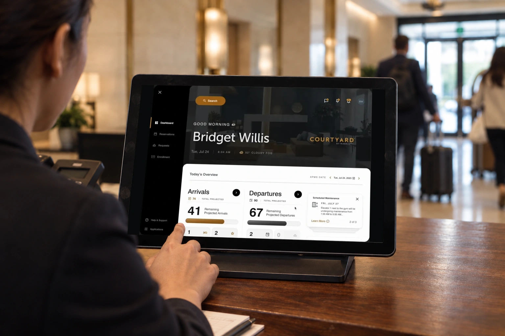
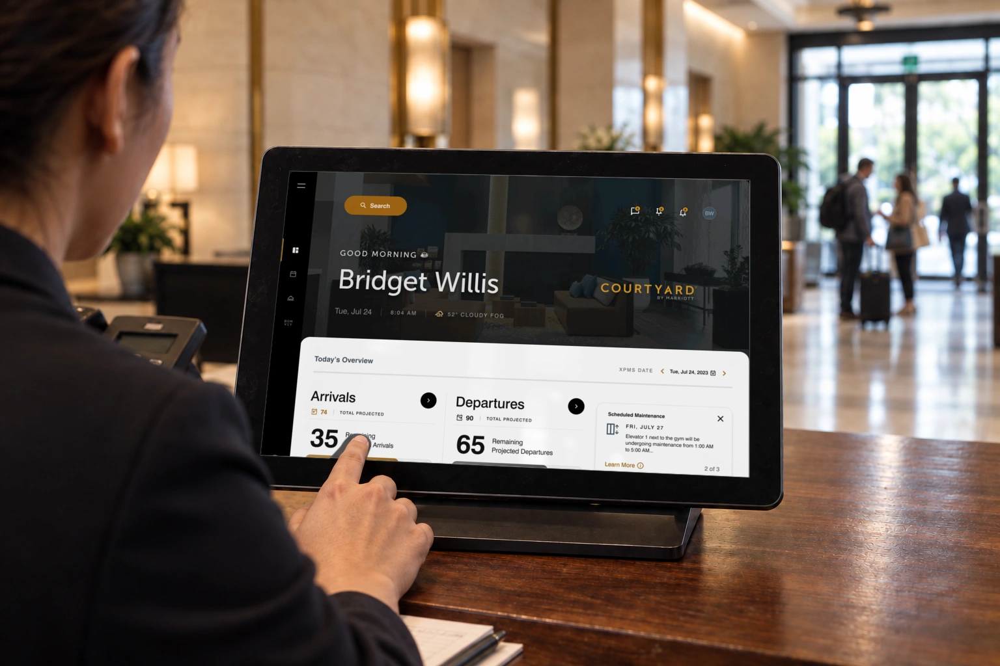

<!doctype html>
<html lang="en">
  <meta charset="utf-8" /><meta name="viewport" content="width=device-width,initial-scale=1" /><title>Marriott · hotel in use</title
  ><style>
    * {
      box-sizing: border-box;
    }
    body {
      background: #141613;
      color: #eee;
      margin: 0;
      padding: 30px;
      font: 16px/1.4 Arial;
    }
    a {
      color: inherit;
    }
    header {
      display: flex;
      justify-content: space-between;
      gap: 24px;
      margin-bottom: 28px;
    }
    h1 {
      font-size: 28px;
      margin: 0;
    }
    .grid {
      display: grid;
      grid-template-columns: 1fr 1fr;
      gap: 24px;
    }
    figure {
      margin: 0;
    }
    img {
      width: 100%;
      display: block;
    }
    figcaption {
      padding-top: 12px;
    }
    footer {
      margin-top: 28px;
    }
    @media (max-width: 700px) {
      body {
        padding: 18px;
      }
      .grid {
        grid-template-columns: 1fr;
      }
      header {
        display: block;
      }
      h1 {
        margin-bottom: 12px;
      }
    }
  </style>
  <header>
    <h1>Marriott, in use.</h1>
    <a href="../?project=marriott">All Marriott media ↗</a>
  </header>
  <main class="grid">
    <figure>
      
      <figcaption>Previous</figcaption>
    </figure>
    <figure>
      <a href="marriott-corrected.png"></a>
      <figcaption>Actual tablet viewport, corrected mapping and more distant guests.</figcaption>
    </figure>
  </main>
  <footer><a href="marriott-corrected.png" download>Download PNG</a> · <a href="marriott-corrected.webp" download>Download WebP</a></footer>
</html>
